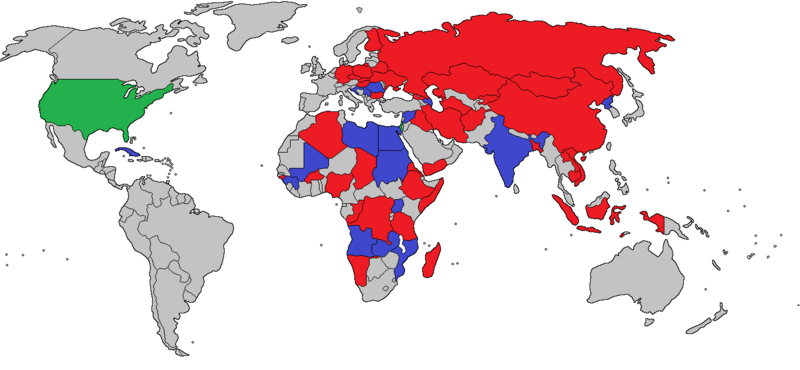

El Mikoyán-Gurévich MiG-21 es un avión de combate sovietico diseñado en 1955, que tiene el record de caza supersonico mas producido en la historia con mas de 11.000 ejemplares hasta la fecha. El último ejemplar fue producido en 2017.
Este caza cuenta con más de 30 modificacines distintas, siendo las primeras consideradas como caza de segunda generación, y las más modernas, de tercera generación.
El MiG-21 ha estado en servicio en mas de 50 paises, y sigue en sevicio en 14 de ellos. (En azul los usuarios actuales y en rojo los usuarios históricos)
(EEUU solo como Avión civil privado)

A continucaión se muestra una tabla con las principales variantres del MiG-21
Variantes